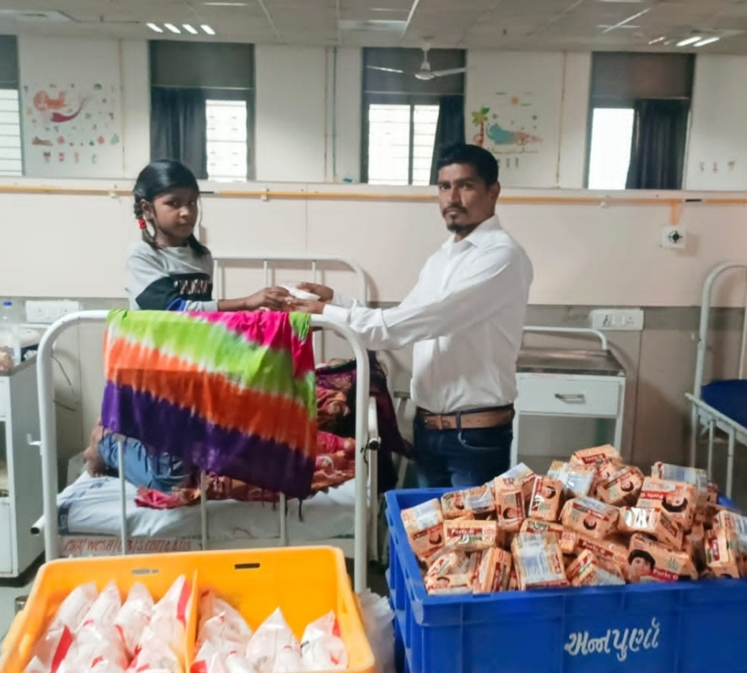
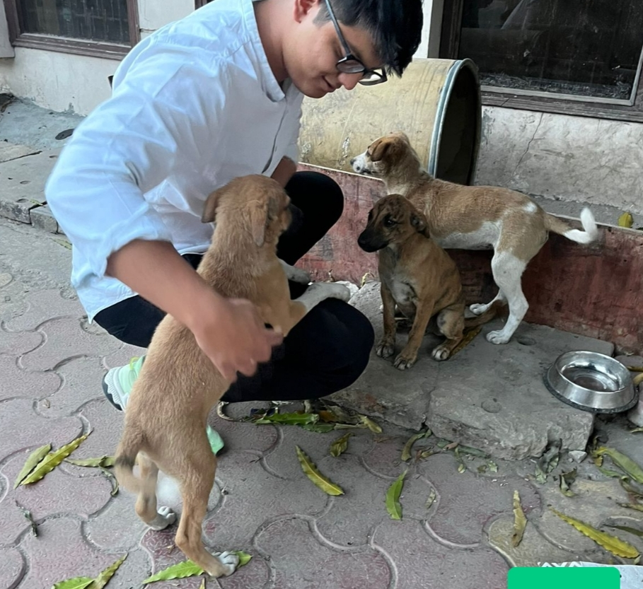
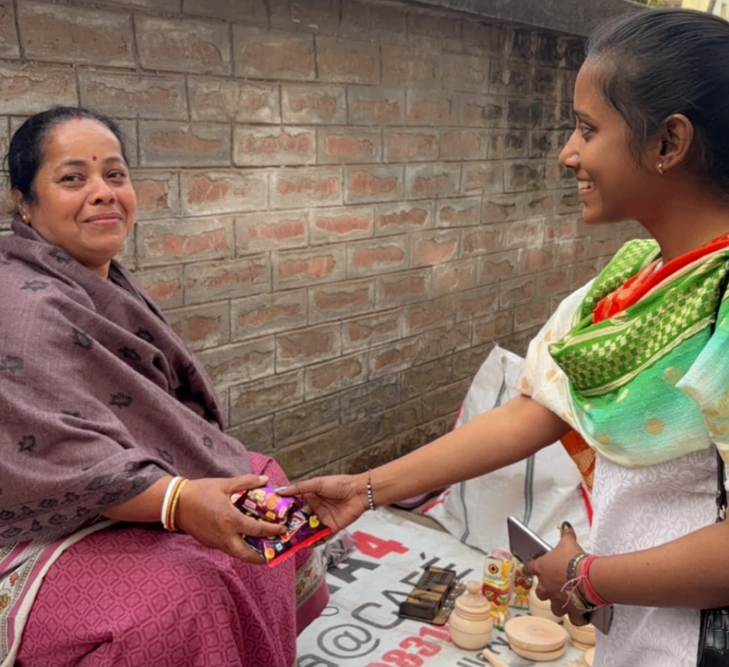
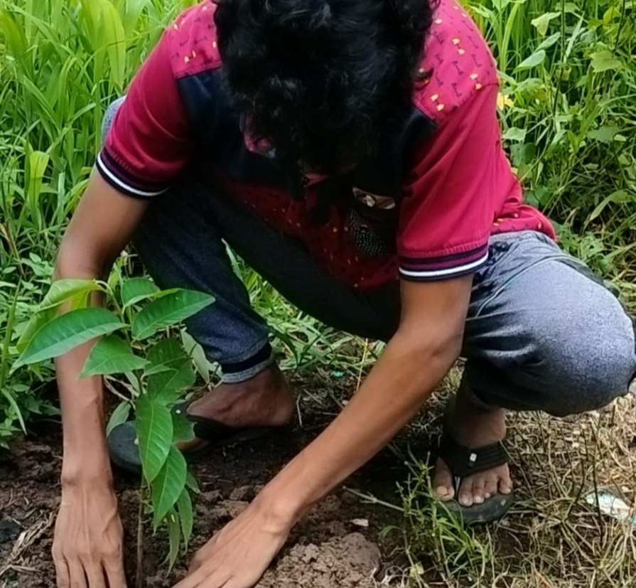
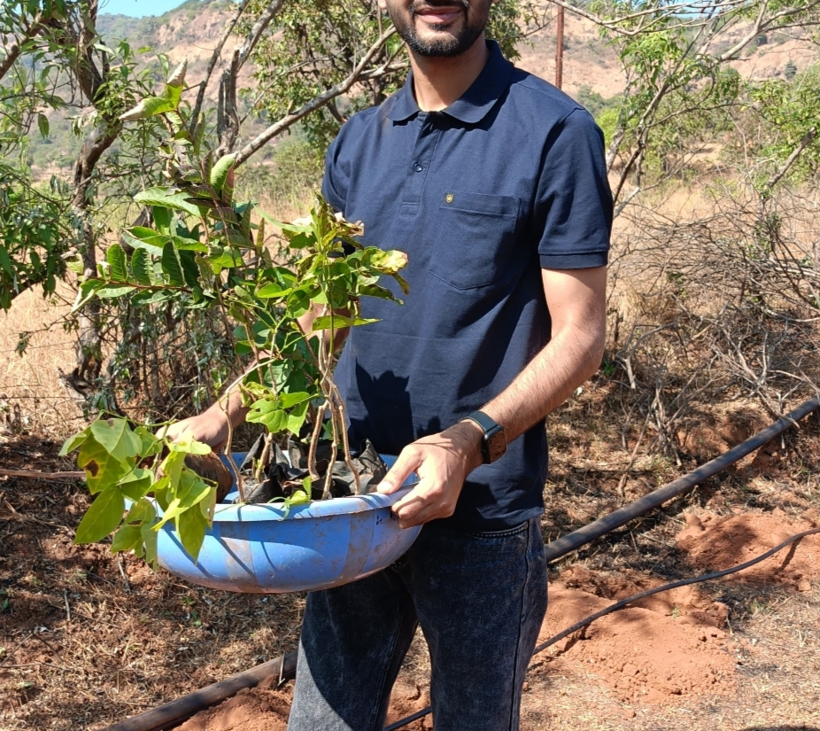
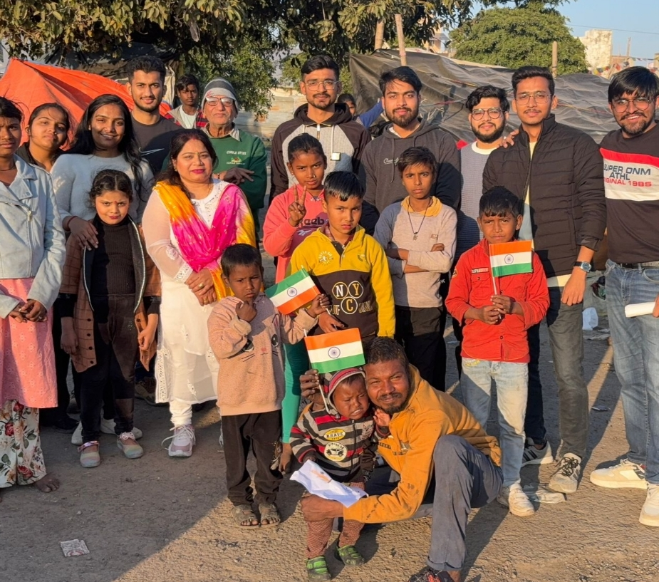

InAmigos Foundation (IAF)
InAmigos Foundation (IAF)
Uniting minds for change Nonprofit Organization | Registered Under Section 8
Licensed by the Central Government
80G & 12A Certified |
CSR-1 Registered
IAF ISO 9001:2015 Certified
Recognized with NGO Darpan - NITI Aayog
Whether through volunteering, partnerships, or donations, every contribution strengthens our cause and enables us to expand our reach and impact. Together, we can build a more inclusive, compassionate, and empowered society.
Let's Know About Us
InAmigos Foundation(IAF), founded on September 23, 2020, by Mr. Govind Shukla (Founder & CEO), is a Section 8 registered non-profit organization committed to creating lasting social impact. With its base in Chhattisgarh, the foundation operates across India, addressing critical societal issues through a network of dedicated professionals and volunteers.
Our Credentials & Recognitions:
✔ Registered under Section 8 – Licensed by the Central Government
✔ 80G & 12A Certified – Ensuring transparency, accountability, and tax exemptions for donors
✔ CSR-1 Registered – Eligible for corporate CSR partnerships
✔ NITI Aayog Registered – Aligning with national development goals
✔ IAF ISO 9001:2015 Certified – Committed to maintaining high-quality standards
At InAmigos Foundation, we believe in the power of collective action. Our transparent operations and strong partnerships enable us to bring real, measurable change to society. Through our social media presence and online platforms, we ensure that every initiative reaches the right audience, encouraging more individuals and organizations to join our mission.
Our Purpose and Objective
At InAmigos Foundation, we are committed to fostering community development and social empowerment through impactful, sustainable initiatives. As a registered non-profit organization under Section 8, certified under 80G & 12A, CSR-1, and ISO 9001:2015, and recognized by NGO Darpan (NITI Aayog), we strive to bridge gaps in education, healthcare, and economic opportunities for underprivileged communities.
Our mission is built on the principles of inclusivity, empathy, and collaboration, addressing the diverse needs of the communities we serve. From educational programs (Bachpanshala) and women empowerment initiatives (Udaan) to environmental sustainability (Prakriti), animal care (Jeev), and community support (Seva), our holistic approach aims to not only provide immediate relief but also empower individuals for long-term growth.
We believe in the power of grassroots involvement and collective action. By working hand-in-hand with local leaders, volunteers, and partner organizations, we design culturally sensitive, community-driven solutions that inspire lasting impact.
Our Projects and Events
Projects
Project SEVA – Over 50,000+ meals and clothing distributed to the underprivileged.

✔ Project BACHPANSHALA – Bridging educational gaps by training underprivileged children in basic digital literacy, life skills, and school education support.

✔ Project JEEV – Dedicated to animal welfare, feeding 50+ stray animals daily through our volunteer network.

✔ Project UDAAN – Empowering women by collaborating with self-help groups in rural areas, promoting financial independence, skill development, and menstrual hygiene awareness.

✔ Project PRAKRITI – Advocating for sustainability and environmental conservation by planting 20,000+ saplings and supporting eco-friendly agriculture.

✔ Project VIKAS – Facilitating employment and skill development through internships in various fields, having trained 30,000+ interns in the last four years in data operations, finance, research, content writing, digital marketing, social work, and more.

Events

22 March 2025
World Water Day 2025
This event highlights the importance of water conservation and collective action to ensure clean water for all.

20 March 2025
International Day of Happiness 2025
Join us in spreading joy, positivity, and well-being through engaging activities and inspiring discussions.

11 February 2025
International Day of Women and Girls in Science 2025
Join us on February 11, 2025, to celebrate the International Day of Women and Girls in Science.
and many more....
Contact Us
Join us in our mission to create a more equitable and inclusive world.Together, we can transform lives, inspire change and build a bright future.
Address: Ward No. 5, Gram Post, Sipat UjwalNagar, Bilaspur, Chhattisgarh, Pin-Code: 495555.
Email: inamigosfoundation@gmail.com
Contact No: +91 626 730 9902